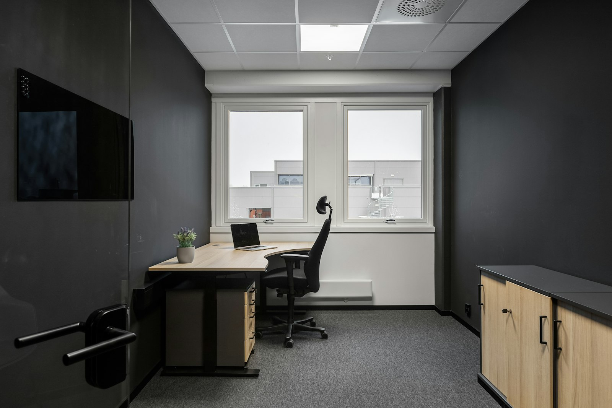
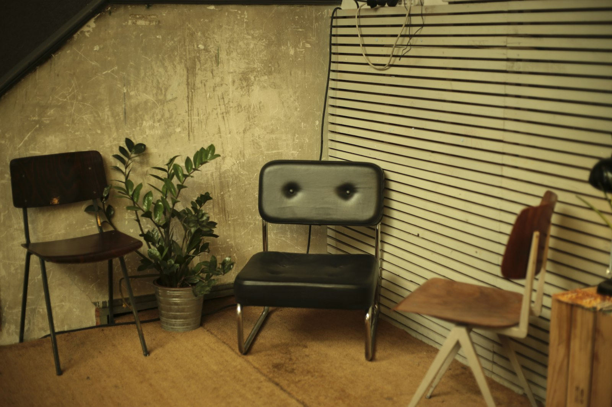

Le cabinet.
12 rue Crébillon, à deux pas de la place Graslin, dans un immeuble en pierre du XIXᵉ siècle. Le cabinet est ouvert du lundi au vendredi, et le samedi sur rendez-vous.
Maître Hélène Caradec.
Hélène Caradec a été inscrite au Barreau de Nantes en 2016, après dix années passées à Paris comme collaboratrice dans un cabinet de droit social. Elle a fait le choix de Nantes pour y installer un cabinet à taille humaine, généraliste sur deux domaines complémentaires : le travail et la famille.
Le cabinet privilégie le travail écrit et tracé : chaque échange important est confirmé par mail, chaque décision est expliquée avant d'être prise.
- Formation
- DEA droit social — Université Paris II Panthéon-Assas
- Inscription
- Barreau de Nantes, depuis 2016
- Parcours
- Collaboratrice 2006-2016, cabinet de droit social à Paris
- Langues
- Français · Anglais (lu, écrit, parlé)

Une secrétaire juridique à vos côtés.
L'accueil téléphonique, la gestion des rendez-vous et la pré-instruction des dossiers sont assurés par la secrétaire juridique du cabinet. Vous avez toujours un interlocuteur identifié, du premier appel au classement du dossier.
12 rue Crébillon, Nantes.
Le cabinet occupe le premier étage d'un immeuble en pierre du XIXᵉ siècle, dans le quartier Graslin. Lumière naturelle, mobilier sobre, accueil discret.

Venir au cabinet.
- Adresse — 12 rue Crébillon, 44000 Nantes (quartier Graslin)
- Tramway — Ligne 1, arrêt Commerce (3 minutes à pied)
- Bus — Lignes C3 et 11, arrêts Graslin et Commerce
- Parking — Parking souterrain Graslin, à 80 mètres
- Accès PMR — Oui, par l'ascenseur de l'immeuble (entrée principale)
- Vélo — Stations Bicloo Graslin et Commerce
Venir au cabinet ?
Le premier rendez-vous dure 30 minutes et reste gratuit. Sur place 12 rue Crébillon, ou par téléphone si vous préférez.
Prendre rendez-vous